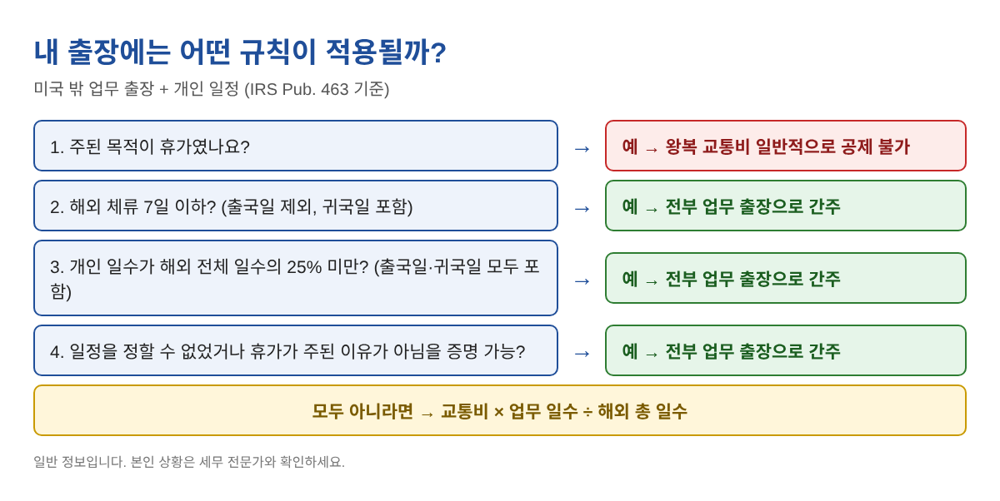
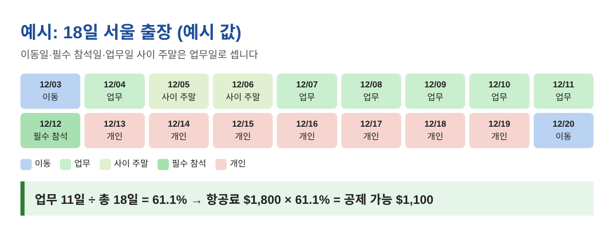
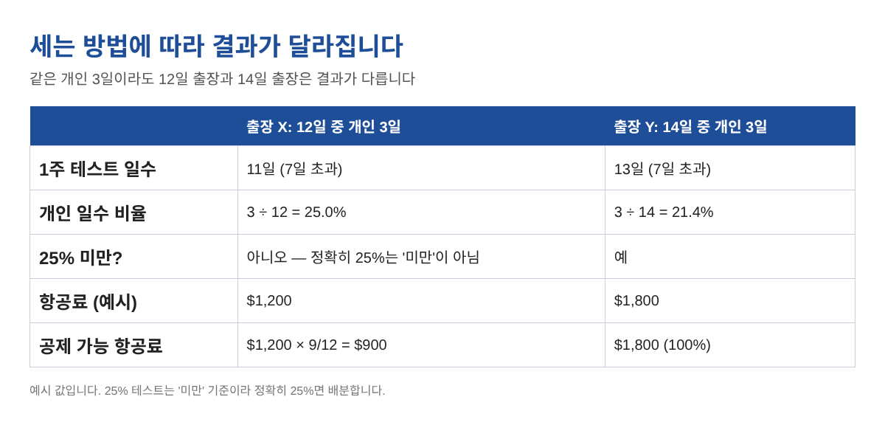

해외 출장 중 개인 일정이 있었다면? 항공료 공제 가능 금액 계산법 (7일·25% 규칙)
해외 출장 중 개인 일정이 있었다면? 항공료 공제 가능 금액 계산법 (7일·25% 규칙)
한국 거래처 미팅이나 박람회 때문에 출장을 갔다가, 일을 마치고 부모님 댁에서 일주일쯤 더 머무르는 경우가 많습니다. 나중에 장부를 정리할 때 가장 큰 금액은 대개 항공료인데, "이 항공료를 전부 사업 경비로 봐도 되나?"가 고민됩니다. 미국 밖 출장에 대해서는 IRS Publication 463에 정해진 규칙이 있습니다. 개인 일정이 있어도 전부 업무 출장으로 보는 경우가 있고, 날짜별로 나눠야 하는 경우도 있습니다. 날짜를 잘못 세면 과다 공제가 되거나, 받을 수 있는 공제를 놓칠 수 있습니다.
이 글은 일반 정보이며 세무·법률 자문이 아닙니다. 본인 상황은 반드시 세무 전문가와 확인하세요.
이런 분께 해당됩니다
미국(50개 주와 DC) 밖으로 업무 출장을 가면서 개인 일정을 더한 자영업자·소상공인 사장님. 회사 경비 정산을 받는 직원, 북미 밖에서 열리는 컨벤션, 크루즈 여행은 별도 규칙이 있어 이 글에서 다루지 않습니다.
1단계: 어떤 규칙이 적용되는지 정하기
Publication 463에 따르면 아래 네 가지 예외 중 하나라도 해당하면 미국 밖 출장이라도 전부 업무 출장으로 봅니다. 어느 것도 해당하지 않고 주된 목적이 업무라면 날짜 비율로 나눕니다. 주된 목적이 휴가였다면 왕복 교통비는 일반적으로 개인 비용입니다.

- 일정을 실질적으로 정할 수 없었던 경우. Publication 463은 자영업자는 일반적으로 일정을 정할 수 있다고 보므로, 보통 사장님께는 해당하지 않습니다.
- 해외 체류 1주 이하. 1주는 연속 7일이며, 미국을 떠난 날은 세지 않고 돌아온 날은 셉니다.
- 1주를 넘더라도 개인 일정이 전체 해외 일수의 25% 미만. 이 테스트에서는 출발일과 도착일을 모두 셉니다.
- 개인 휴가가 주된 고려 사항이 아니었음을 증명할 수 있는 경우.
2단계: 업무일과 개인일 세기
25% 테스트나 배분이 필요하면 해외에 있던 날을 하루씩 구분해야 합니다. Publication 463 기준으로 업무일에는 일반적으로 다음이 포함됩니다.
- 이동일: 업무지로 가고 오는 날 (합리적인 직행 경로 기준, 개인 경유로 늘어난 날은 제외)
- 필수 참석일: 특정 업무 목적으로 그곳에 있어야 했던 날 (그날 대부분을 개인 용무로 보냈더라도 포함)
- 근무일: 근무 시간의 주된 활동이 업무였던 날
- 업무일 사이의 주말·공휴일: 업무가 끝난 뒤 개인 사유로 더 머문 날은 개인일입니다.
- 불가항력일: 통제할 수 없는 사정으로 일하지 못한 날

3단계: 테스트 또는 비율 적용하기
주된 목적이 업무인데 예외에 해당하지 않으면, 왕복 교통비의 공제 가능 부분은 "해외 업무일 수 ÷ 해외 총 일수"로 계산합니다. 이 비율에서는 미국을 떠난 날과 돌아온 날을 모두 해외 일수에 넣습니다.
| 예시 출장 (예시 값) | 1주 테스트 일수 | 총 일수 | 개인 일수 | 적용 규칙 | 공제 가능 항공료 |
|---|---|---|---|---|---|
| A: 6일 출장, $1,600 | 6 | 7 | 2 | 1주 이하 | $1,600 |
| B: 14일, $1,800 | 13 | 14 | 3 (21.4%) | 25% 미만 | $1,800 |
| C: 18일, $1,800 | 17 | 18 | 7 (38.9%) | 배분 11/18 | $1,100 |
| E: 12일, $1,200 | 11 | 12 | 3 (25.0%) | 배분 9/12 | $900 |
C는 1주 테스트 일수가 17일이고 개인 비율이 7 ÷ 18 = 38.9%이므로 배분합니다: $1,800 × 11 ÷ 18 = $1,100. E가 함정입니다. 12일 중 개인 3일은 정확히 25%인데, 기준이 "25% 미만"이므로 통과하지 못하고 배분합니다.

4단계: 엑셀·구글 시트로 계산하기
B1에 미국 출국일, B2에 귀국일, B3에 개인 일수, B4에 왕복 교통비를 넣고 아래 수식을 입력하세요.
1주 테스트 일수 =B2-B1 해외 총 일수 =B2-B1+1 개인 일수 비율 =B3/(B2-B1+1) 적용 규칙 =IF(B2-B1<=7,"1주 이하",IF(B3/(B2-B1+1)<0.25,"25% 미만","배분")) 공제 가능 교통비 =IF(B2-B1<=7,B4,IF(B3/(B2-B1+1)<0.25,B4,B4*(B2-B1+1-B3)/(B2-B1+1)))
B1·B2는 날짜 형식으로 지정하세요. 이 수식은 주된 목적이 업무이고 예외 1·4는 해당하지 않는다고 가정합니다. 개인 경유지를 넣은 경우 Publication 463은 다른 방법을 보여 줍니다. 실제 낸 금액에서 직항 왕복 요금의 개인 몫을 빼는 방식입니다. 예시에서는 실제 $1,850, 직항 $1,250, 개인 7/18일 때 $1,850 − ($1,250 × 7/18) = 약 $1,364입니다.
5단계: 현지 비용 처리
| 비용 (예시) | 업무일 | 개인일 |
|---|---|---|
| 호텔 | 일반적으로 업무 출장 경비 | 일반적으로 개인 비용 |
| 식사 | 일반적으로 50% | 개인 비용 |
| 미팅 장소 택시, 박람회 등록비 | 일반적으로 업무 출장 경비 | 일반적으로 개인 비용 |
| 동행한 배우자·가족 항공권 | 일반적으로 공제 불가 | 공제 불가 |
자주 하는 실수
- 1주 테스트에서 출국일까지 세는 실수 (1주 테스트에서는 빼고, 25% 테스트와 비율에서는 셉니다)
- 정확히 25%를 통과로 보는 실수 (기준은 25% "미만")
- 마지막 미팅 뒤 개인 사유로 머문 주말을 업무일로 세는 실수
- 직접 일정을 잡은 사장님에게 "일정 통제 불가" 예외를 적용하는 실수
- 가족 항공권이나 호텔 업그레이드 비용을 함께 넣는 실수
- 몇 달 뒤 기억으로 다시 만드는 기록 (Publication 463은 추정 금액을 인정하지 않는다고 합니다)
자주 묻는 질문
8일 미만 출장이면 항공료 전액이 공제되나요? 주된 목적이 업무이고 Publication 463 방식으로 센 해외 체류가 1주 이하라면 전부 업무 출장으로 봅니다. 다만 개인일의 관광 비용 같은 개인 경비는 여전히 개인 비용입니다.
대부분 휴가였고 미팅이 한 번뿐이었다면요? 주된 목적이 휴가였다면 왕복 교통비는 공제되지 않는 개인 비용입니다. 세미나 등록비처럼 업무와 직접 관련된 비용은 공제될 수 있습니다.
토요일·일요일도 세나요? 업무일 사이에 낀 주말은 일반적으로 업무일로 셉니다. 업무가 끝난 뒤 개인 사유로 머문 주말은 업무일이 아닙니다.
한국 쪽 세금은요? 이 글은 미국 연방 세금 기준입니다. 한국 거주자이거나 한국에서 소득이 있는 경우 한국 측 신고 의무가 있을 수 있으니 한국 세무사와 확인하세요(이 글의 범위 밖입니다).
간단 체크리스트
- ☐ 미국 출국일과 귀국일
- ☐ 날짜별 구분: 이동·업무·필수 참석·사이 주말·불가항력·개인
- ☐ 업무일과 지출별 업무 목적
- ☐ 숙박은 모두, 그 외 $75 이상 지출은 영수증 보관
- ☐ 적용한 규칙과 계산 과정 (일반적으로 신고일로부터 3년 보관)
위 과정을 그대로 해 주는 해외 출장 경비 배분 계산기 2026은 아래 무료 키트 다운로드에서 가입 없이 무료로 받으실 수 있습니다(엑셀 + PDF 가이드).
안내: 이 글은 교육용 일반 정보이며 세무·법률·회계 자문이 아닙니다. IRS Publication 463(2025년판)의 일반 규칙을 설명할 뿐, 개별 상황에 대한 판단이 아닙니다. 규정은 바뀔 수 있으므로 최신판을 확인하고, 본인 상황은 세무 전문가와 확인하세요. 모든 금액과 날짜는 예시입니다.
출처
- IRS Publication 463 (2025) 1장 — Travel Outside the United States (미국 밖 출장) — 확인일 2026-11-23
- IRS Publication 463 (2025) 5장 — Recordkeeping (기록 보관) — 확인일 2026-11-23
무료 키트 다운로드
글에서 설명한 내용을 그대로 따라 할 수 있는 도구입니다. 가입 없이 바로 받으세요.
- Excel 계산 도구 (.xlsx)Foreign_Trip_Allocator_2026_EN_KR.xlsx · 31 KB
- 단계별 가이드 (PDF)Foreign_Trip_Guide_2026_EN_KR.pdf · 316 KB
본인과 본인 사업에 무료로 쓰세요. 재판매·재배포는 하지 마세요. 일반 정보이며 세무·법률·회계 자문이 아닙니다. 숫자는 본인 자료로 꼭 확인하세요.